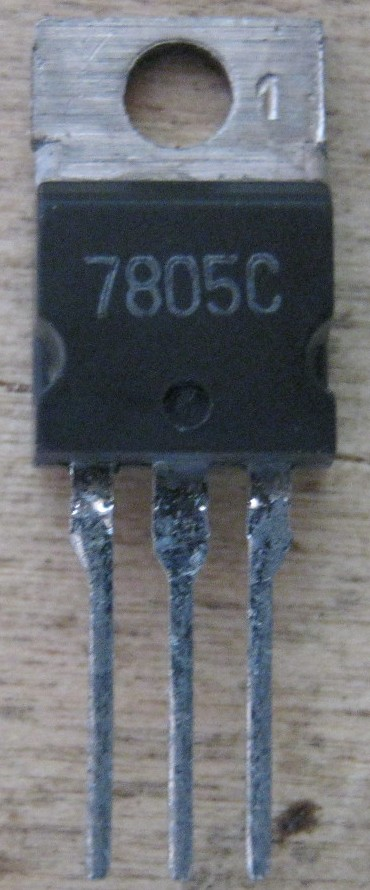
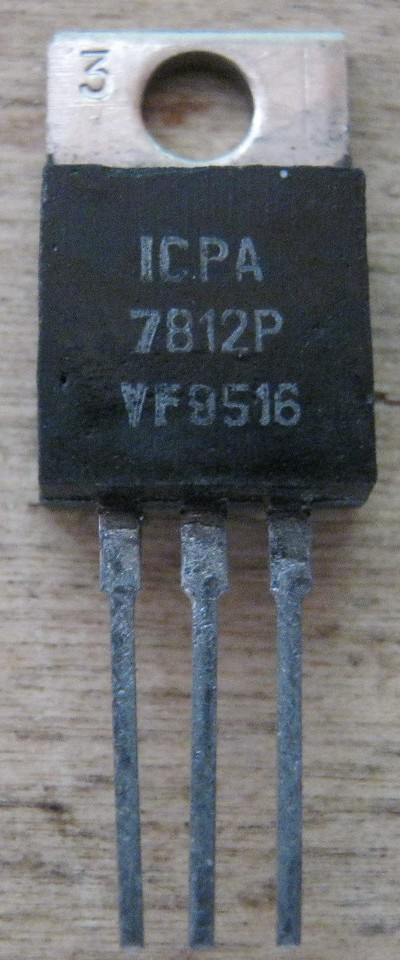
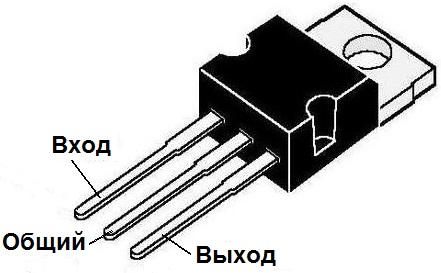
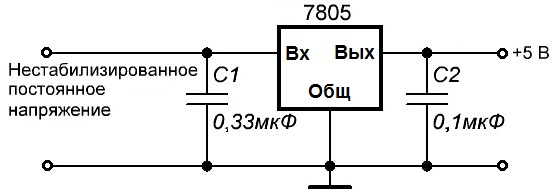
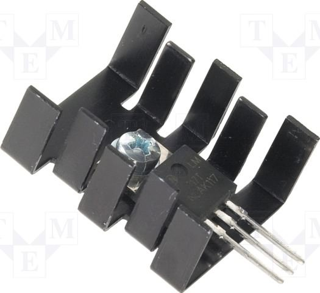

Cтабилизаторы серии LM78’’
—ери€ 78’’ выпускаютс€ в металлических корпусах† “ќ-3 и в пластмассовых корпусах “ќ-220 (рис. 1). “акие стабилизаторы имеют три вывода: вход, общий (земл€) и выход.
{kind=link}



–ис. 1 - ¬нешний вид стабилизаторов серии LM78’’ в корпусе “ќ-220
¬место "’’" изготовители указывают напр€жение стабилизации, которое выдает этот стабилизатор. Ќапример, стабилизатор 7805 на выходе будет выдавать 5 ¬, 7812 соответственно 12 ¬т, а 7815 - 15 ¬.
“ипова€ схема подключени€ стабилизаторов серии 78’’ показана на рис. 2.

–ис. 2 - “ипова€ схема подключени€ стабилизаторов серии LM78’’
ƒва конденсатора, которые устанавливаютс€ с каждой стороны, требуютс€ дл€ уменьшени€ пульсаций по входу и по выходу. Ќа схеме указаны минимальные значени€ конденсаторов. ∆елательно поставить большего номинала.†
–ассеиваема€ мощность на стабилизаторе может достигать до 15 ¬т. ѕоэтому его надо установить через термопасту на радиатор. „ем больше ток на выходе, тем больше по габаритам должен быть радиатор. ≈сли радиатор обдуваетс€ кулером, будет ещЄ лучше.

–ис. 3 - —табилизатор на радиаторе
“аблица 1
| ѕараметр | «начение | ||
|---|---|---|---|
| ћин. | Ќом. | ћакс. | |
| ¬ыходное напр€жение, ¬ | 4,80 | 5,00 | 5,20 |
| 4,75 | 5,00 | 5,25 | |
| Ћинейное регулирование, м¬ | Ч | 4,0 | 100,0 |
| Ч | 1,6 | 50,0 | |
| –егулирование нагрузки, м¬ | Ч | 9,0 | 100,0 |
| Ч | 4,0 | 50,0 | |
| “ок поко€, мј | Ч | 5 | 8 |
| »зменение тока поко€, мј | Ч | 0,03 | 0,50 |
| Ч | 0,30 | 1,30 | |
| ƒрейф выходного напр€жени€, м¬/∞C | Ч | -0,8 | Ч |
| ¬ыходное напр€жение шума, мк¬ | Ч | 42 | Ч |
| ѕодавление пульсаций, ƒб | 62 | 73 | Ч |
| Ќапр€жение выключени€, ¬ | Ч | 2 | Ч |
| ¬ыходное сопротивление, мќм | Ч | 15 | Ч |
| “ок короткого замыкани€, мј | Ч | 230 | Ч |
| ѕиковый ток, ј | Ч | 2,2 | Ч |
“аблица 2
| ѕараметр | «начение | ||
|---|---|---|---|
| ћин. | Ќом. | ћакс. | |
| ¬ыходное напр€жение, ¬ | 5,75 | 6,00 | 6,25 |
| 5,70 | 6,00 | 6,30 | |
| Ћинейное регулирование, м¬ | Ч | 5,0 | 120,0 |
| Ч | 1,5 | 60,0 | |
| –егулирование нагрузки, м¬ | Ч | 9,0 | 120,0 |
| Ч | 3,0 | 60,0 | |
| “ок поко€, мј | Ч | 5 | 8 |
| »зменение тока поко€, мј | Ч | Ч | 0,5 |
| Ч | Ч | 1,3 | |
| ƒрейф выходного напр€жени€, м¬/∞C | Ч | -0,8 | Ч |
| ¬ыходное напр€жение шума, мк¬ | Ч | 45 | Ч |
| ѕодавление пульсаций, ƒб | 62 | 73 | Ч |
| Ќапр€жение выключени€, ¬ | Ч | 2 | Ч |
| ¬ыходное сопротивление, мќм | Ч | 19 | Ч |
| “ок короткого замыкани€, мј | Ч | 250 | Ч |
| ѕиковый ток, ј | Ч | 2,2 | Ч |
“аблица 3
| ѕараметр | «начение | ||
|---|---|---|---|
| ћин. | Ќом. | ћакс. | |
| ¬ыходное напр€жение, ¬ | 7,7 | 8,0 | 8,3 |
| 7,6 | 8,0 | 8,4 | |
| Ћинейное регулирование, м¬ | Ч | 5 | 160 |
| Ч | 2 | 80 | |
| –егулирование нагрузки, м¬ | Ч | 10 | 160 |
| Ч | 5 | 80 | |
| “ок поко€, мј | Ч | 5 | 8 |
| »зменение тока поко€, мј | Ч | 0,05 | 0.50 |
| Ч | 0,5 | 1,0 | |
| ƒрейф выходного напр€жени€, м¬/∞C | Ч | -0,8 | Ч |
| ¬ыходное напр€жение шума, мк¬ | Ч | 52 | Ч |
| ѕодавление пульсаций, ƒб | 56 | 73 | Ч |
| Ќапр€жение выключени€, ¬ | Ч | 2 | Ч |
| ¬ыходное сопротивление, мќм | Ч | 17 | Ч |
| “ок короткого замыкани€, мј | Ч | 230 | Ч |
| ѕиковый ток, ј | Ч | 2,2 | Ч |
“аблица 4
| ѕараметр | «начение | ||
|---|---|---|---|
| ћин. | Ќом. | ћакс. | |
| ¬ыходное напр€жение, ¬ | 8,65 | 9,00 | 9,35 |
| 8,60 | 9,00 | 9,40 | |
| Ћинейное регулирование, м¬ | Ч | 6 | 180 |
| Ч | 2 | 90 | |
| –егулирование нагрузки, м¬ | Ч | 12 | 180 |
| Ч | 4 | 90 | |
| “ок поко€, мј | Ч | 5 | 8 |
| »зменение тока поко€, мј | Ч | Ч | 0,5 |
| Ч | Ч | 1,3 | |
| ƒрейф выходного напр€жени€, м¬/∞C | Ч | -1 | Ч |
| ¬ыходное напр€жение шума, мк¬ | Ч | 58 | Ч |
| ѕодавление пульсаций, ƒб | 56 | 71 | Ч |
| Ќапр€жение выключени€, ¬ | Ч | 2 | Ч |
| ¬ыходное сопротивление, мќм | Ч | 17 | Ч |
| “ок короткого замыкани€, мј | Ч | 250 | Ч |
| ѕиковый ток, ј | Ч | 2,2 | Ч |
“аблица 5
| ѕараметр | «начение | ||
|---|---|---|---|
| ћин. | Ќом. | ћакс. | |
| ¬ыходное напр€жение, ¬ | 9,6 | 10,0 | 10,4 |
| 9,5 | 10,0 | 10,5 | |
| Ћинейное регулирование, м¬ | Ч | 10 | 200 |
| Ч | 3 | 100 | |
| –егулирование нагрузки, м¬ | Ч | 12 | 200 |
| Ч | 4 | 400 | |
| “ок поко€, мј | Ч | 5,1 | 8,0 |
| »зменение тока поко€, мј | Ч | 0,5 | |
| Ч | 1,0 | ||
| ƒрейф выходного напр€жени€, м¬/∞C | Ч | -1 | Ч |
| ¬ыходное напр€жение шума, мк¬ | Ч | 58 | Ч |
| ѕодавление пульсаций, ƒб | 56 | 71 | Ч |
| Ќапр€жение выключени€, ¬ | Ч | 2 | Ч |
| ¬ыходное сопротивление, мќм | Ч | 17 | Ч |
| “ок короткого замыкани€, мј | Ч | 250 | Ч |
| ѕиковый ток, ј | Ч | 2,2 | Ч |
“аблица 6
| ѕараметр | «начение | ||
|---|---|---|---|
| ћин. | Ќом. | ћакс. | |
| ¬ыходное напр€жение, ¬ | 11,5 | 12,0 | 12,5 |
| 11,4 | 12,0 | 12,6 | |
| Ћинейное регулирование, м¬ | Ч | 10 | 240 |
| Ч | 3 | 120 | |
| –егулирование нагрузки, м¬ | Ч | 11 | 240 |
| Ч | 5 | 120 | |
| “ок поко€, мј | Ч | 5,1 | 8,0 |
| »зменение тока поко€, мј | Ч | 0,1 | 0,5 |
| Ч | 0,5 | 1,0 | |
| ƒрейф выходного напр€жени€, м¬/∞C | Ч | -1 | Ч |
| ¬ыходное напр€жение шума, мк¬ | Ч | 76 | Ч |
| ѕодавление пульсаций, ƒб | 55 | 71 | Ч |
| Ќапр€жение выключени€, ¬ | Ч | 2 | Ч |
| ¬ыходное сопротивление, мќм | Ч | 18 | Ч |
| “ок короткого замыкани€, мј | Ч | 230 | Ч |
| ѕиковый ток, ј | Ч | 2,2 | Ч |
“аблица 7
| ѕараметр | «начение | ||
|---|---|---|---|
| ћин. | Ќом. | ћакс. | |
| ¬ыходное напр€жение, ¬ | 14,40 | 15,0 | 15,60 |
| 14,25 | 15,0 | 15,75 | |
| Ћинейное регулирование, м¬ | Ч | 11 | 300 |
| Ч | 3 | 150 | |
| –егулирование нагрузки, м¬ | Ч | 12 | 300 |
| Ч | 4 | 150 | |
| “ок поко€, мј | Ч | 5,2 | 8,0 |
| »зменение тока поко€, мј | Ч | 0,5 | |
| Ч | 1,0 | ||
| ƒрейф выходного напр€жени€, м¬/∞C | Ч | -1 | Ч |
| ¬ыходное напр€жение шума, мк¬ | Ч | 90 | Ч |
| ѕодавление пульсаций, ƒб | 54 | 70 | Ч |
| Ќапр€жение выключени€, ¬ | Ч | 2 | Ч |
| ¬ыходное сопротивление, мќм | Ч | 19 | Ч |
| “ок короткого замыкани€, мј | Ч | 250 | Ч |
| ѕиковый ток, ј | Ч | 2,2 | Ч |
“аблица 8
| ѕараметр | «начение | ||
|---|---|---|---|
| ћин. | Ќом. | ћакс. | |
| ¬ыходное напр€жение, ¬ | 17,3 | 18,0 | 18,7 |
| 17,1 | 18,0 | 18,9 | |
| Ћинейное регулирование, м¬ | Ч | 15 | 360 |
| Ч | 5 | 180 | |
| –егулирование нагрузки, м¬ | Ч | 15 | 360 |
| Ч | 5 | 180 | |
| “ок поко€, мј | Ч | 5,2 | 8,0 |
| »зменение тока поко€, мј | Ч | Ч | 0,5 |
| Ч | Ч | 1,0 | |
| ƒрейф выходного напр€жени€, м¬/∞C | Ч | -1 | Ч |
| ¬ыходное напр€жение шума, мк¬ | Ч | 110 | Ч |
| ѕодавление пульсаций, ƒб | 53 | 69 | Ч |
| Ќапр€жение выключени€, ¬ | Ч | 2 | Ч |
| ¬ыходное сопротивление, мќм | Ч | 22 | Ч |
| “ок короткого замыкани€, мј | Ч | 250 | Ч |
| ѕиковый ток, ј | Ч | 2,2 | Ч |
“аблица 9
| ѕараметр | «начение | ||
|---|---|---|---|
| ћин. | Ќом. | ћакс. | |
| ¬ыходное напр€жение, ¬ | 23,00 | 24,00 | 25,00 |
| 22,80 | 24,00 | 25,25 | |
| Ћинейное регулирование, м¬ | Ч | 17 | 480 |
| Ч | 6 | 240 | |
| –егулирование нагрузки, м¬ | Ч | 15 | 480 |
| Ч | 5 | 240 | |
| “ок поко€, мј | Ч | 5,2 | 8,0 |
| »зменение тока поко€, мј | Ч | 0,1 | 0,5 |
| Ч | 0,5 | 1,0 | |
| ƒрейф выходного напр€жени€, м¬/∞C | Ч | -1,5 | Ч |
| ¬ыходное напр€жение шума, мк¬ | Ч | 120 | Ч |
| ѕодавление пульсаций, ƒб | 50 | 67 | Ч |
| Ќапр€жение выключени€, ¬ | Ч | 2 | Ч |
| ¬ыходное сопротивление, мќм | Ч | 28 | Ч |
| “ок короткого замыкани€, мј | Ч | 230 | Ч |
| ѕиковый ток, ј | Ч | 2,2 | Ч |
»сточники
ruselectronic.com - “рехвыводные стабилизаторы напр€жени€
rudatasheet.ru - LM78XX/LM78XXA 3-х выводной 1 ј положительный стабилизатор напр€жени€